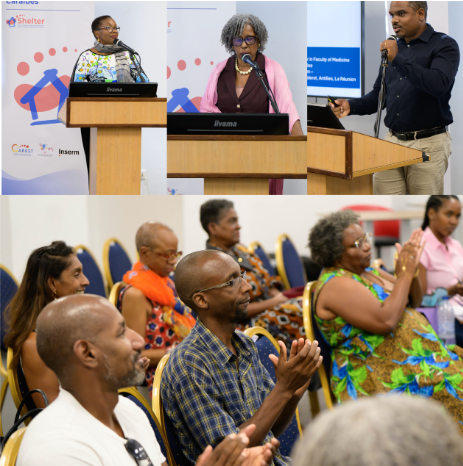

Official launch of the SHELTER programme
(Interreg Caraïbes)
The Caribbean Network of Researchers on Sickle Cell Disease and Thalassemia (CAREST) officially launched the SHELTER programme, bringing together its partners around a clear and shared objective: Strengthening the fight against sickle cell disease in the Caribbean by improving access to care and developing regional research programmes.
This launch marks an important milestone for regional collaboration and commitment to patients and research innovation.
Congratulations and many thanks to our colleagues in Pointe-à-Pitre, whose strong involvement and dedication play a key role in the success of the CAREST network.